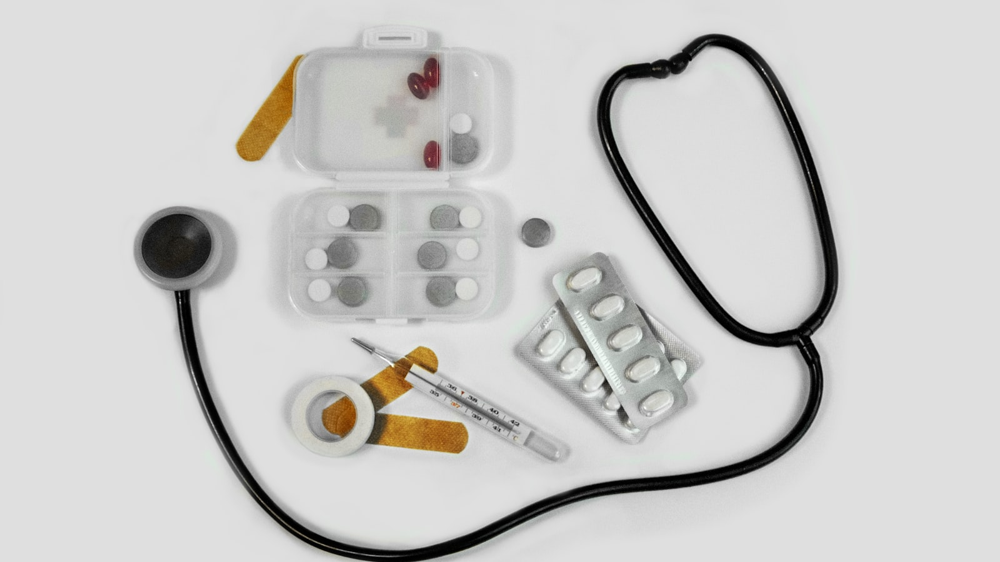
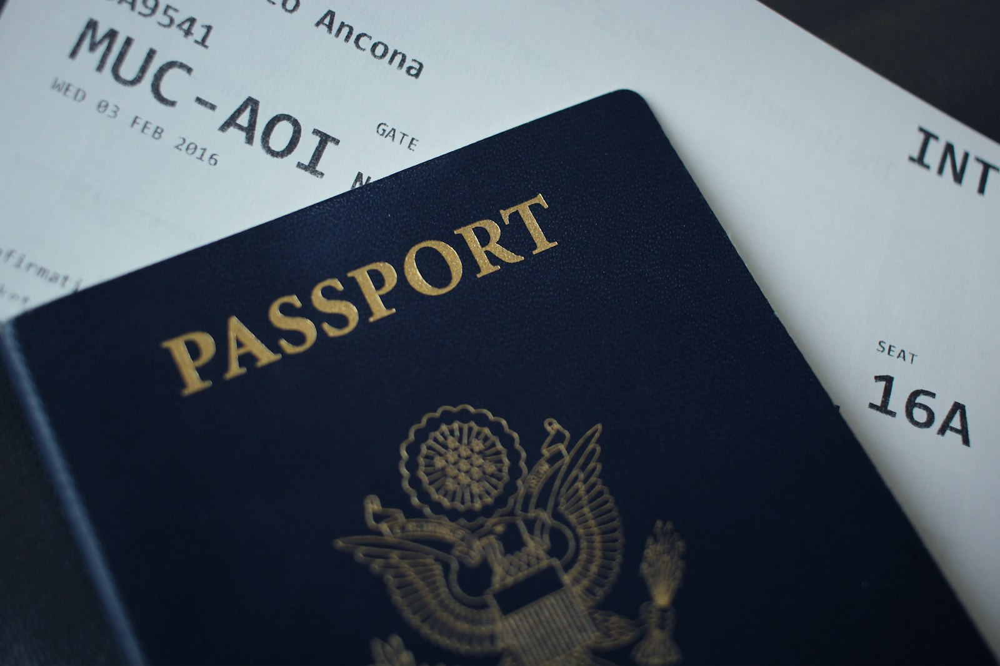

Checklist Perlengkapan Medis & Dokumen Esensial yang Jarang Disebutkan di Flyer

Flyer paket umrah biasanya menonjolkan hal-hal yang mudah difoto: hotel bintang lima, jarak ke Masjidil Haram, seragam batik, dan koper cantik. Semua itu penting. Tetapi ada satu kategori yang hampir tidak pernah dicantumkan di brosur manapun — dan justru menentukan apakah Anda bisa beribadah dengan tenang atau malah menghabiskan hari terbaik Anda di klinik: perlengkapan medis pribadi dan penataan dokumen esensial.
Artikel ini bukan daftar bawaan generik yang bisa Anda temukan di mana saja. Ini adalah checklist berbasis pengalaman lapangan — apa yang benar-benar dibutuhkan jemaah saat menghadapi suhu 45°C di siang Makkah atau 7°C di subuh Madinah, bagaimana menyusun dokumen agar tidak panik saat satu lembar hilang, dan — yang jarang dibahas — barang apa yang justru sebaiknya Anda tinggalkan agar koper tidak kelebihan beban.
1Obat Pribadi: Fondasi yang Tidak Boleh Dikompromi
Ini adalah kategori paling krusial sekaligus paling sering diremehkan. Fasilitas kesehatan memang tersedia di Tanah Suci, tetapi antrean bisa panjang, kendala bahasa nyata, dan tidak semua merek obat Indonesia tersedia di sana. Prinsipnya sederhana: bawa obat Anda sendiri, dalam jumlah cukup, dengan kemasan asli berlabel.
Obat rutin (untuk penyakit kronis)
Bagi jemaah dengan hipertensi, diabetes, jantung, asma, atau kondisi kronis lainnya — inilah yang paling utama. Bawa untuk seluruh durasi perjalanan plus cadangan 3–5 hari untuk mengantisipasi keterlambatan penerbangan. Sertakan salinan resep dokter (idealnya dalam bahasa Inggris) untuk berjaga bila ditanya petugas bea cukai atau bila perlu menebus ulang di apotek Saudi.
Obat bebas untuk keluhan umum di Tanah Suci
- Penurun demam & pereda nyeri (parasetamol) — untuk demam, sakit kepala, dan pegal setelah tawaf/sa'i.
- Obat batuk, pilek & radang tenggorokan — "batuk umrah" sangat umum karena AC, debu, dan kerumunan.
- Obat diare & oralit — perubahan makanan dan air kerap memicu gangguan pencernaan.
- Obat maag/antasida — jadwal makan yang berubah dan makanan pedas Arab.
- Antihistamin — untuk alergi debu atau makanan tak dikenal.
- Vitamin C & suplemen daya tahan — menjaga stamina di tengah padatnya ibadah.
- Minyak angin/balsam & koyo — untuk masuk angin dan pegal, favorit jemaah Indonesia.
2Menyesuaikan dengan Musim: Panas vs Dingin
Inilah nuansa yang tidak pernah ada di flyer. Kebutuhan medis dan perlindungan tubuh Anda berbeda drastis tergantung kapan Anda berangkat. Arab Saudi memiliki dua wajah iklim yang ekstrem.
| Aspek | Musim Panas (Mei–September) | Musim Dingin (Desember–Februari) |
|---|---|---|
| Suhu | 40–48°C siang, sangat terik & kering | Siang 20–25°C, malam bisa 5–10°C (Madinah lebih dingin) |
| Risiko utama | Dehidrasi, heat stroke, kulit & bibir pecah, sunburn | Batuk-pilek, radang tenggorokan, kulit kering, sendi ngilu |
| Wajib dibawa | Tabir surya SPF 30+, spray air/thermal water, topi, kacamata hitam, botol minum, oralit | Jaket/sweater, kaus kaki tebal, syal, pelembap ekstra, obat flu, vitamin |
| Perlindungan kulit | Moisturizer ringan, lip balm ber-SPF, petroleum jelly untuk hidung | Moisturizer kaya (rich), lip balm, hand cream, petroleum jelly |
Perhatikan bahwa pelembap dan lip balm wajib di kedua musim — karena musuh sejati kulit di Tanah Suci bukan suhu, melainkan kelembapan udara yang sangat rendah sepanjang tahun. Banyak jemaah kaget bibirnya pecah-pecah di hari kedua meski berangkat musim dingin.
3Perlindungan Kulit di Iklim Gurun
Kulit adalah organ terbesar tubuh, dan di gurun ia bekerja paling keras. Berikut perlengkapan perlindungan kulit yang layak masuk tas kabin Anda — ringkas tapi berdampak besar:
- Pelembap (moisturizer) — oleskan pagi dan malam; kulit kering rentan iritasi dan gatal.
- Lip balm — bibir pecah membuat sulit membaca doa dengan nyaman; pilih yang ber-SPF untuk musim panas.
- Tabir surya SPF 30+ — untuk wajah, leher, dan tangan yang terpapar saat berjalan antar-masjid.
- Petroleum jelly (Vaseline) — serbaguna: melembapkan hidung yang kering (mencegah mimisan), melindungi kulit lecet karena gesekan ihram, dan menjaga tumit.
- Hand cream — tangan sering dicuci sebelum ibadah, mudah kering dan kasar.
- Kacamata hitam & topi/payung lipat — perlindungan dari silau dan sengatan matahari langsung.
Yang membedakan jemaah yang beribadah khusyuk dari yang terganggu bukan kekuatan iman semata — sering kali sesederhana apakah bibirnya pecah dan tenggorokannya radang atau tidak.

4Penataan Dokumen: Fisik vs Digital
Kehilangan dokumen di tengah jutaan jemaah adalah mimpi buruk yang nyata. Kuncinya bukan memilih antara fisik atau digital — melainkan redundansi: menyimpan dalam beberapa bentuk sehingga bila satu hilang, yang lain menyelamatkan.
Dokumen fisik (bawa dalam map tahan air)
- Paspor — masa berlaku minimal 6 bulan dari tanggal keberangkatan.
- Visa umrah — pastikan tercetak jelas.
- Tiket pesawat / e-ticket — cetak sebagai cadangan.
- Buku kesehatan / sertifikat vaksin meningitis (ICV) — wajib, buku kuning.
- Kartu identitas (KTP) dan pasfoto cadangan latar putih.
- Kartu identitas jemaah & gelang dari travel — jangan dilepas selama di sana.
Salinan digital (di ponsel + cloud)
- Foto/scan seluruh dokumen di atas, simpan di galeri ponsel dan di email/cloud yang bisa diakses offline.
- Kirim juga salinan ke keluarga di rumah dan ke tour leader Anda.
- Simpan nomor darurat: tour leader, muthawif, KJRI Jeddah, dan kontak keluarga.
5Barang yang Justru Sebaiknya Tidak Dibawa
Bagian ini paling jarang dibahas — padahal paling menyelamatkan koper Anda dari denda overweight dan membebaskan ruang untuk oleh-oleh serta air Zamzam pulang. Berikut barang yang sering dibawa berlebihan atau tidak perlu sama sekali:
- Pakaian berlebihan — cukup 3–4 setel plus baju ihram. Layanan laundry tersedia di hotel dan sekitar masjid dengan harga terjangkau.
- Air mineral — melimpah dan murah di Tanah Suci; air Zamzam gratis di masjid. Tidak perlu memberatkan koper dari rumah.
- Makanan berat dalam jumlah besar — bawa secukupnya untuk hari pertama saja (abon, kering tempe). Restoran Indonesia banyak di Makkah & Madinah.
- Perlengkapan mandi ukuran besar — hotel menyediakan sebagian; bawa ukuran travel size dan beli di sana bila kurang.
- Setrika & hair dryer besar — hotel umumnya menyediakan; membawa sendiri hanya menambah beban dan risiko masalah voltase.
- Oleh-oleh dari Indonesia — kurma, sajadah, tasbih, dan parfum justru lebih murah dan otentik dibeli di sana.
- Barang elektronik berlebih — cukup ponsel, power bank, dan charger. Universal adapter jauh lebih ringkas daripada banyak perangkat.
Aturan koper yang bijak: berangkat dengan bagasi terisi 70%. Sisakan 30% untuk air Zamzam dan oleh-oleh — karena koper yang penuh saat berangkat pasti overweight saat pulang.
Ingat pula bahwa air Zamzam pada banyak maskapai diberikan terpisah (biasanya jatah 5 liter) dan tidak dihitung dalam bagasi utama — jadi jangan mengorbankan ruang koper untuknya dari rumah.
6Checklist Ringkas Sebelum Berangkat
Cetak atau simpan bagian ini sebagai pengingat akhir sebelum menutup koper:
| Kategori | Item wajib |
|---|---|
| Obat (tas kabin) | Obat rutin + resep, parasetamol, obat batuk-pilek, obat diare & oralit, antasida, antihistamin, vitamin, minyak angin/koyo |
| Perlindungan kulit | Moisturizer, lip balm, tabir surya SPF 30+, petroleum jelly, hand cream |
| Sesuai musim | Panas: topi, kacamata hitam, spray air, botol minum · Dingin: jaket, syal, kaus kaki tebal |
| Dokumen fisik | Paspor, visa, tiket, sertifikat vaksin meningitis, KTP, pasfoto, kartu & gelang travel — dalam map tahan air |
| Dokumen digital | Scan semua dokumen di ponsel + cloud + kirim ke keluarga & tour leader; simpan nomor darurat |
| Jangan dibawa | Pakaian berlebih, air mineral, makanan berat, setrika, hair dryer besar, oleh-oleh dari Indonesia |
7Mengapa Ini Menjadi Tanggung Jawab Travel yang Baik
Di sinilah letak pembeda travel yang sekadar menjual paket dengan travel yang benar-benar mendampingi. Detail seperti pengingat obat pribadi, panduan musim, dan checklist dokumen memang tidak muncul di flyer — tetapi travel yang amanah akan memberikannya kepada Anda tanpa diminta, melalui manasik, grup koordinasi, dan pendampingan tour leader yang paham lapangan.
Ketika Anda sedang memilih partner perjalanan, perhatikan bukan hanya harga dan fasilitas hotel, tetapi juga seberapa dalam mereka membekali Anda dengan hal-hal kecil yang menyelamatkan. Karena pada akhirnya, umrah yang tenang lahir dari persiapan yang matang — dan persiapan yang matang lahir dari pendamping yang peduli pada detail.
Jika Anda sedang menyiapkan keberangkatan dan ingin pendampingan yang memperhatikan hingga hal sekecil ini, konsultasikan rencana umrah Anda bersama tim Nahdi Tour. Anda juga bisa memperkaya persiapan dengan membaca panduan waktu terbaik berangkat umroh agar dapat menyesuaikan bawaan dengan musim, serta panduan umroh di era digital untuk mengelola dokumen dan aplikasi Anda secara cerdas.
Pertanyaan yang Sering Diajukan
Obat pribadi apa saja yang wajib dibawa?
Obat rutin pribadi (untuk penyakit kronis) plus cadangan 3–5 hari dengan salinan resep, ditambah obat bebas: parasetamol, obat batuk-pilek, diare & oralit, antasida, antihistamin, dan vitamin. Semua dalam kemasan asli di tas kabin.
Bagaimana melindungi kulit dari cuaca gurun?
Pelembap dan lip balm wajib sepanjang tahun karena udara sangat kering. Tambahkan tabir surya SPF 30+ dan petroleum jelly. Musim panas perlu spray air; musim dingin perlu pelembap lebih kaya.
Dokumen fisik atau digital?
Keduanya, dengan prinsip redundansi tiga lapis: asli di map tahan air, fotokopi di tas terpisah, dan salinan digital di cloud. Jika satu hilang, yang lain menyelamatkan.
Barang apa yang tidak perlu dibawa?
Pakaian berlebih, air mineral, makanan berat, setrika, hair dryer besar, dan oleh-oleh dari Indonesia. Sisakan 30% ruang koper untuk Zamzam dan oleh-oleh pulang.
Apakah sertifikat vaksin meningitis wajib?
Ya, vaksin meningitis (ICV/buku kuning) adalah syarat wajib masuk Arab Saudi. Bawa fisik dan simpan salinan digitalnya.
Penutup
Perlengkapan medis dan dokumen mungkin bukan bagian yang "menjual" di sebuah flyer — tidak seindah foto hotel atau semewah janji fasilitas. Tetapi justru di sinilah letak ketenangan sebuah perjalanan ibadah. Ketika obat Anda lengkap, kulit Anda terlindungi, dan dokumen Anda tertata rapi, pikiran Anda bebas untuk fokus pada yang utama: menghadap Ka'bah, memuliakan Rasulullah ﷺ, dan memanjatkan doa dengan hati yang tenang. Semoga Allah memudahkan setiap langkah persiapan Anda menuju rumah-Nya. Aamiin.